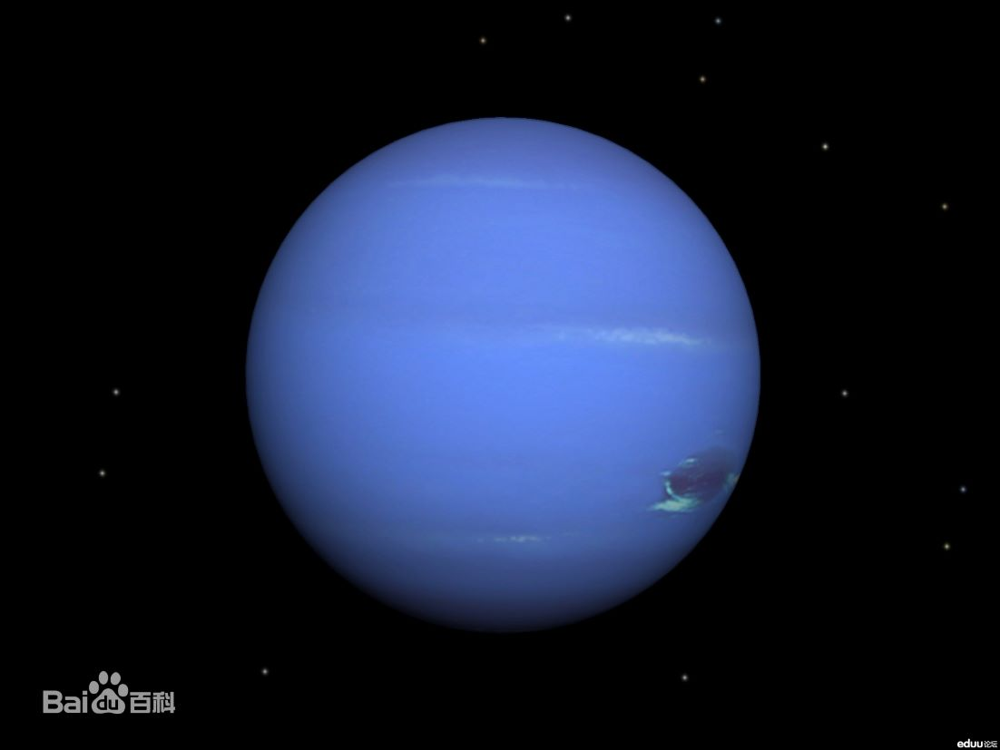

|  | 海王星（英语：Neptune，天文符号：♆）是太阳系八大行星之一，也是已知太阳系中离太阳最远的大行星。海王星的轨道半长轴为30.07天文单位，公转周期为164.8年，质量为17.147地球质量（第3位，比它的近邻天王星稍大），半径为3.86地球半径（第4位） [1] 。 海王星的视星等最高约为7.67等，需要借助天文望远镜才能观察 [2] 。海王星对肉眼呈蓝色，西方人据此按罗马神话中的海神尼普顿（Neptune）的名字而命名。李善兰等人于1859年翻译《谈天》时，将其中文译文定为海王星。 海王星的大气层的化学组成以氢分子和氦为主。此外，海王星大气中还有微量的甲烷，这是使行星呈蓝色的原因之一。海王星有着强烈的风暴，测量到的风速高达2400km/h。海王星云顶温度是-218摄氏度（55K），比天王星云顶温度稍高。据推测，海王星很可能有一个炽热的内部，其核心的温度约7000℃，和大多数已知的行星相似。海王星的质量稍大于天王星，密度稍大于天王星，而半径稍小于天王星。 |
返回 |